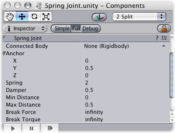

Previous
Previous
The Spring Joint groups together 2 Rigidbodies, constraining them to move like they are connected by a spring.
|  |
The Spring Joint
Properties
| Property: | Function: |
|---|---|
| Optional reference to the Rigidbody that the joint is dependent upon. | |
| Position in the object's local space (at rest) that defines the center of the joint. | |
| Position of the joint's center along the X axis. | |
| Position of the joint's center along the Y axis. | |
| Position of the joint's center along the Z axis. | |
| Strength of the spring. The farther from the Anchor, the stronger the spring will pull. | |
| Amount that the spring is reduced when active. | |
| Distances greater than this will not cause the Spring to activate. | |
| Distances less than this will not cause the Spring to activate. | |
| The force that needs to be applied for this joint to break. | |
| The torque that needs to be applied for this joint to break. |
Details
Spring Joints allow you to define a point in 3D space that any particular object is drawn to. As an object travels further away from that point, the Spring Joint applies forces that will pull it back to its Anchor position. This creates an effect very similar to a rubber band or a slingshot.
Connected Rigidbody
You do not need to connect a Rigidbody for your joint to work. Use of Connected Rigidbodies depends on the situation, and the effect you are trying to achieve. Generally, you should only connect a Rigidbody if your object is dependent on it and the object will be moving and rotating. If there is no Connected Rigidbody, your Spring will connect to the world.
Spring & Damper
Spring is the strength of the Joint's force that draws the object back toward its designated Anchor. If this is 0, then there is no force that will pull on the object, and it will behave as if no Spring is attached at all.
Damper is the resistance encountered by the Spring force. The lower this is, the springier the object will be. As the Damper is increased, the amount of bounciness caused by the Spring will be reduced.
Min & Max Distance
If the position of your object falls in-between the Min & Max Distances, then the spring will not affect your object. The position must be moved outside of these values for the Spring to activate.
Hints
- You do not need to assign a Connected Body to your joint for it to work.
- Spring Joints require your object to have a Rigidbody attached